Home
首页
Research
研究领域
Pro chu
初教授
Members
组员
Facilities
仪器设备
Publications
发表文章
Resoure
相关资源
发表文章
Liu, J.; Zhou, Y.; Hu, X.; Chu, B.,
Flexoelectric effect in PVDF-based copolymers and terpolymers
. Applied Physics Letters 2018, 112 (23), 232901.
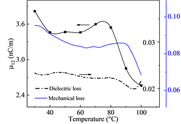
Zhang, H.; Chu, B.,
Energy harvesting by exploiting the enhanced flexoelectric-like response of reduced (Na
0. 5
Bi
0. 5
)
0.92
Ba
0. 08
TiO
3
ceramics
. Journal of the European Ceramic Society 2018, 38 (6), 2520-2525.
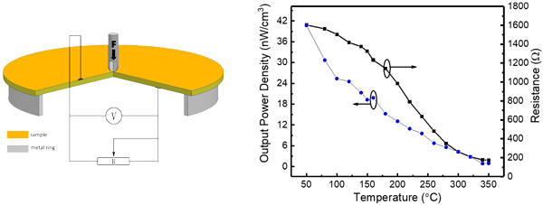
Hu, X.; Zhou, Y.; Liu, J.; Chu, B.,
Improved flexoelectricity in PVDF/barium strontium titanate (BST) nanocomposites
. Journal of Applied Physics 2018, 123 (15), 154101.
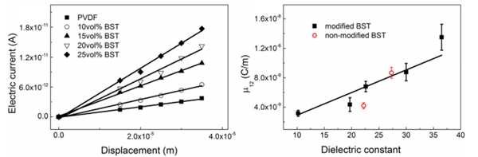
Chen, P.; Zhang, H.; Chu, B.,
Strain gradient induced thermal-electrical response in paraelectric Na
0. 5
Bi
0. 5
TiO
3
-based ceramics
. Physical Review Materials 2018, 2 (3), 034401.
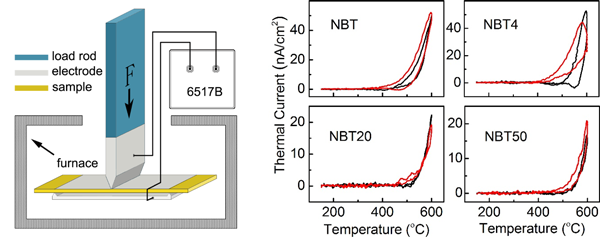
Zhou, W.; Zhang, H.; Chen, P.; Chu, B.,
Analysis of high temperature reduction process of Na
0. 5
Bi
0. 5
TiO
3
-based ceramics
. Journal of the European Ceramic Society 2017.
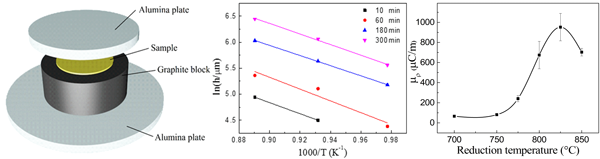
Zhou, Y.; Liu, J.; Hu, X.; Chu, B.; Chen, S.; Salem, D.,
Flexoelectric effect in PVDF-based polymers
. IEEE Transactions on Dielectrics and Electrical Insulation 2017, 24 (2), 727-731.
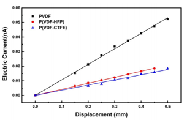
Hu, X.; Yi, K.; Liu, J.; Chu, B.,
High Energy Density Dielectrics Based on PVDF‐based Polymers
. Energy Technology.
Chu, B.; Salem, D. R.,
Impact-induced solidlike behavior and elasticity in concentrated colloidal suspensions
. Physical Review E 2017, 96 (4), 042601.
Zhou, W.; Chu, B.,
Sodium bismuth titanate-based lead-free RAINBOW piezoelectric devices
. Journal of the European Ceramic Society 2017, 37 (6), 2373-2377.
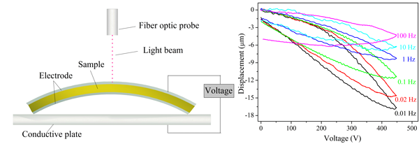
Chu, B.; Zhou, Y.,
Energy storage properties of PVDF terpolymer/PMMA blends
. High voltage 2016, 1 (4), 171-174.
Zhang, X.; Liu, J.; Chu, M.; Chu, B.,
Flexoelectric piezoelectric metamaterials based on the bending of ferroelectric ceramic wafers
. Applied Physics Letters 2016, 109 (7), 072903.
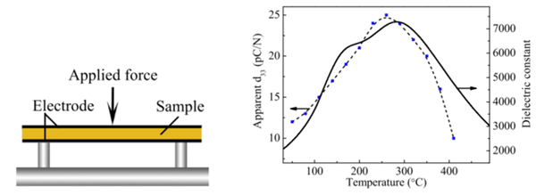
Chen, P.; Chu, B.,
Improvement of dielectric and energy storage properties in Bi (Mg
1/2
Ti
1/2
)O
3
-modified (Na
1/2
Bi
1/2
)
0.92
Ba
0. 08
TiO
3
ceramics
. Journal of the European Ceramic Society 2016, 36 (1), 81-88.
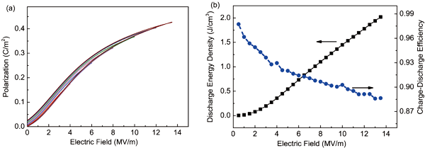
Zhou, W.; Chu, B.,
Strong electromechanical response in lead zirconate titanate metamaterials
. Journal of the American Ceramic Society 2016, 99 (10), 3317-3324.
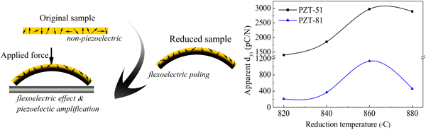
Zhou, W.; Chen, P.; Pan, Q.; Zhang, X.; Chu, B.,
Lead‐Free Metamaterials with Enormous Apparent Piezoelectric Response
. Advanced Materials 2015, 27 (41), 6349-6355.
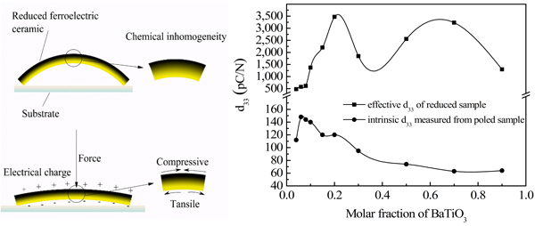
Neese, B.; Lu, S.; Chu, B.; Zhang, Q.,
Electrocaloric effect of the relaxor ferroelectric poly (vinylidene fluoride-trifluoroethylene-chlorofluoroethylene) terpolymer
. Applied Physics Letters 2009, 94 (4), 042910.
Chu, B.; Lin, M.; Neese, B.; Zhang, Q.,
Interfaces in poly (vinylidene fluoride) terpolymer/ZrO 2 nanocomposites and their effect on dielectric properties
. Journal of Applied Physics 2009, 105 (1), 014103.
Li, J.; Seok, S. I.; Chu, B.; Dogan, F.; Zhang, Q.; Wang, Q.,
Nanocomposites of ferroelectric polymers with TiO
2
nanoparticles exhibiting significantly enhanced electrical energy density
. Advanced Materials 2009, 21 (2), 217-221.
Lu, S.; Neese, B.; Chu, B.; Wang, Y.; Zhang, Q.,
Large electric tunability in poly (vinylidene fluoride-trifluoroethylene) based polymers
. Applied Physics Letters 2008, 93 (4), 042905.
Chu, B.; Neese, B.; Lin, M.; Lu, S.-g.; Zhang, Q.,
Enhancement of dielectric energy density in the poly (vinylidene fluoride)-based terpolymer/copolymer blends
. Applied Physics Letters 2008, 93 (15), 152903.
Neese, B.; Chu, B.; Lu, S.-G.; Wang, Y.; Furman, E.; Zhang, Q.,
Large electrocaloric effect in ferroelectric polymers near room temperature
. Science 2008, 321 (5890), 821-823.
Chu, B.; Lin, M.; Neese, B.; Zhou, X.; Chen, Q.; Zhang, Q.,
Large enhancement in polarization response and energy density of poly (vinylidene fluoride-trifluoroethylene-chlorofluoroethylene) by interface effect in nanocomposites
. Applied Physics Letters 2007, 91 (12), 122909.
Neese, B.; Wang, Y.; Chu, B.; Ren, K.; Liu, S.; Zhang, Q.; Huang, C.; West, J.,
Piezoelectric responses in poly (vinylidene fluoride/hexafluoropropylene) copolymers
. Applied physics letters 2007, 90 (24), 242917.
Chen, Q.; Ren, K.; Chu, B.; Liu, Y.; Zhang, Q.; Bobnar, V.; Levstik, A.,
Relaxor Ferroelectric Polymers–Fundamentals and Applications
. Ferroelectrics 2007, 354 (1), 178-191.
Zhou, X.; Chu, B.; Neese, B.; Lin, M.; Zhang, Q.,
Electrical energy density and discharge characteristics of a poly (vinylidene fluoride-chlorotrifluoroethylene) copolymer
. IEEE transactions on dielectrics and electrical insulation 2007, 14 (5).
Chen, Q.; Chu, B.; Zhou, X.; Zhang, Q.,
Effect of metal-polymer interface on the breakdown electric field of poly (vinylidene fluoride-trifluoroethylene-chlorofluoroethylene) terpolymer
. Applied Physics Letters 2007, 91 (6), 062907.
Zhou, X.; Chu, B.; Zhang, Q. M.,
Complex notation for the dielectric response of ferroelectric materials beyond the small sinusoidal fields
. IEEE transactions on ultrasonics, ferroelectrics, and frequency control 2006, 53 (8), 1540-1543.
Chu, B.; Zhou, X.; Ren, K.; Neese, B.; Lin, M.; Wang, Q.; Bauer, F.; Zhang, Q.,
A dielectric polymer with high electric energy density and fast discharge speed
. Science 2006, 313 (5785), 334-336.
Zhang, S.; Chu, B.; Neese, B.; Ren, K.; Zhou, X.; Zhang, Q.,
Direct spectroscopic evidence of field-induced solid-state chain conformation transformation in a ferroelectric relaxor polymer
. Journal of applied physics 2006, 99 (4), 044107.
Chu, B.; Zhou, X.; Neese, B.; Zhang, Q.; Bauer, F.,
Relaxor Ferroelectric Polymer–Poly (vinylidene fluoride-trifluoroethylene-chlorofluoroethylene) Terpolymer High Electric Energy Density and Field Dependent Dielectric Response
. Ferroelectrics 2006, 331 (1), 35-42.
Zhang, S.; Neese, B.; Ren, K.; Chu, B.; Xia, F.; Xu, T.; Tadigadapa, S.; Wang, Q.; Zhang, Q.; Bauer, F.,
Relaxor ferroelectric polymers, thin film devices, and ink-jet microprinting for thin film device fabrication
. Ferroelectrics 2006, 342 (1), 43-56.
Zhang, S.; Neese, B.; Ren, K.; Chu, B.; Zhang, Q.,
Microstructure and electromechanical responses in semicrystalline ferroelectric relaxor polymer blends
. Journal of applied physics 2006, 100 (4), 044113.
Zhang, S.; Klein, R. J.; Ren, K.; Chu, B.; Zhang, X.; Runt, J.; Zhang, Q.,
Normal ferroelectric to ferroelectric relaxor conversion in fluorinated polymers and the relaxor dynamics
. In Frontiers of Ferroelectricity, Springer: 2006; pp 271-280.
Cho, J.; Lee, Y.; Chu, B.; Kim, B. I.; Chung, H.
Processing and properties of piezoelectrics based on BNT (Bi, Na)TiO
3
, Key Engineering Materials, Trans Tech Publ: 2004; pp 1321-1324.
Huang, C.; Bai, B.; Chu, B.; Ding, J.; Zhang, Q.,
Electroactive Polymer Deformable Micromirrors (EAPDM) for Biomedical Optics
. MRS Online Proceedings Library Archive 2004, 820.
Cho, J.; Lee, Y.; Chu, B.; Kim, B. I.
Sintering Behavior and Electrical Properties of (Bi
1/2
Na
1/2
)
0.99
Ca
0.01
TiO
3
Ceramics by Two-Stage Calcination Method
, Materials science forum, Trans Tech Publ: 2003; pp 259-264.
Chu, B.J.; Cho, J.H.; Lee, Y.H.; Kim, B.I.; Chen, D.,
The potential application of BNT-based ceramics in large displacement actuation
. Journal of Ceramic Processing Research 2002, 3 (3/2), 231-234.
Chu, B. J.; Chen, D. R.; Li, G. R.; Yin, Q. R.,
Electrical properties of Na
1/2
Bi
1/2
TiO
3
–BaTiO
3
ceramics
. Journal of the European Ceramic Society 2002, 22 (13), 2115-2121.
Chu, B. J.; Cho, J. H.; Lee, Y. H.; Kim, B. I.; Chen, D.,
The potential application of BNT-based ceramics in large displacement actuation
. Journal of Ceramic Processing Research 2002, 3 (3/2), 231-234.
Chu, B. J.; Li, G. R.; Yin, Q. R.; Zhang, W. Z.; Chen, D. R.,
Influence of Nonstoichiometry and Doping on Electrical Properties of (Na
1/2
Bi
1/2
)
0.92
Ba
0.08
TiO
3
Ceramics
. 2001.
Jiang, X.; Fang, J.; Zeng, H.; Chu, B.; Li, G.; Chen, D.; Yin, Q.,
The influence of PbZro3/PbTio3 ratio on diffuse phase transition of Pb(Zn
1/3
Nb
2/3
)O
3
–PbZro
3
–PbTio
3
system near the morphotropic phase boundary
. Materials Letters 2000, 44 (3-4), 219-222.
Chu, B. J.; Li, G. R.; Jiang, X. P.; Chen, D. R.,
Piezoelectric property and relaxation phase transition of Na
1/2
Bi
1/2
TiO
3
-BaTiO
3
system
. Journal of Inorganic Materials 2000, 15 (5), 815-821.
Jiang, X.-P.; Fang, J.-W.; Chu, B.; ZENG, H.-R.; CHEN, D.-R.; YIN, Q.-R.,
Influence of PbZrO
3
on the Diffuse Phase Transition of PZN-PZ-PT Solid Solution
. JOURNAL OF INORGANIC MATERIALS-BEIJING- 2000, 15 (3), 565-568.
办公室：
0551-63607397（老师用）
常用网站链接
实验室：
0551-63607030（学生用）
科大首页
科大邮箱
办公室：
合肥市金寨路96号中国科学技术大学东区环资楼西234A(老师)
微纳加工中心
实验测试中心
实验室：
合肥市金寨路96号中国科学技术大学东区环资楼(东)210
研究生信息系统
扫面左侧二维码申请加入QQ群
版权所属：初宝进教授实验室